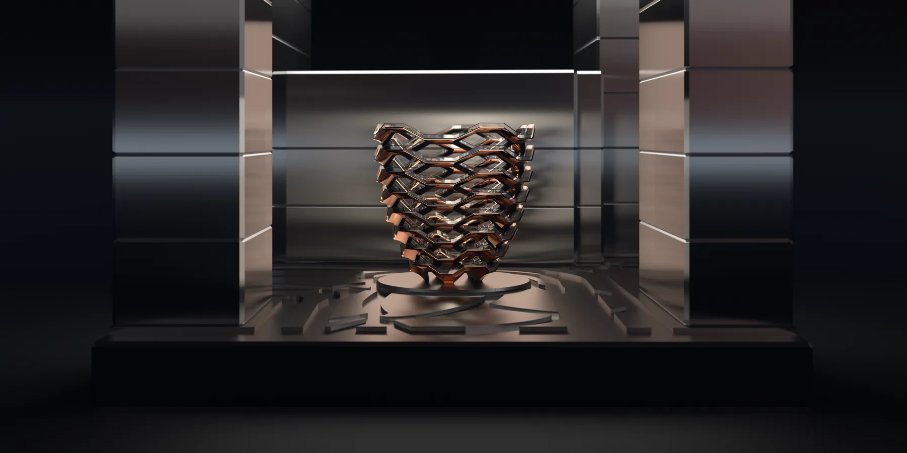

MATERIAL EXPLORATION
Generative Material Systems
Exploring how computational rules become structures, materials and tools.
ARCHITECTUREBio-mimetic Structures
COMPUTATIONAL SYSTEMSData-driven Ecologies
INTERACTIONInteractive Pavilion
How can the way we compute change the way we make?